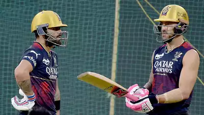

Live Today
Watch videos for trending topics
Voting for JDS was like voting for Congress, says Modi, striking at them in their stronghold of Old Mysuru region
Prime Minister Narendra Modi on Sunday warned people that voting for the JDS was like voting for the Congress. "The JDS has declared it are just expecting 15-20 seats and will become kingmaker," Modi said, calling the regional party the 'B-team' of the Congress and a "private limited party of a family". The PM lashed out at the two parties at the election rallies in Kolar, Ramanagar and Hassan districts, where the BJP is struggling to expand its footprint. The 2018 assembly poll data show the Congress dominates Kolar district while the JDS is strong in Ramanagar, Mandya and Hassan districts. The old Mysuru region, spread across nine districts excluding Bengaluru rural and urban districts, accounts for about a fourth of Karnataka's 224-member Assembly.
LSG vs RCB IPL 2023: Middle order woes for Royal Challengers Bangalore in clash against Lucknow Super Gaints
Struggling to maintain momentum provided by Virat Kohli Faf du Plessis and Glenn Maxwell, Royal Challengers Bangalore face a belligerent Lucknow Super Giants in Lucknow on Monday The margin for errors has reduced in the second half of the competition, with most teams bunched up closely in the standings RCB would look to shed their over-dependence on Kohli, du Plessis and maxwell as they cant be expected to do the job in every game and it is high time the likes of mahipal lomror,shahbaz ahmed and dinesh karthik step up. the fielding and catching too needs to improve , something which was pointed by kohli himself after the loss to KKR.The former indian captain wil continue to lead the side unless du plessis, who has been used as an impact player regains full fittness
Ponniyin Selvan 2' box office collection day 3: The historic drama grosses Rs 130 crore worldwide; Rs 100 crore less than prequel

The historic epic drama, 'Ponniyin Selvan 2' was released in theatres on April 28. Directed by Mani Ratnam, the second part of the movie is running successfully in theatres and the film has reportedly grossed more than Rs 130 crore worldwide. Taking to social media, the movie makers on April 30 announced that the film has grossed Rs 100 crore worldwide and on day 3, Sunday, the film has managed to gross Rs 30 crore. With the long weekend extending even today, May 1, the film is expected to make more than Rs 200 crore in the first week of its screening. 'Ponniyin Selvan 2' was released in Tamil, Telugu, Hindi, Kannada and Malayalam. The film has reportedly grossed $3 million at the US and the film is now among the top 8 grosser in North America. The film is expected to make Rs 1000 crore at the box office by the end of its run in theatres. Comparing it with the prequel, the sequel of the film has not been that successful in terms of its box office collection. The first part of the film, 'Ponniyin Selvan 1' which was released on September 30, 2021 had grossed Rs 230 crore in the first 3 days.The film features Vikram, Karthi, Trisha, Jayam Ravi and Aishwarya Rai in lead roles. The rest of the cast includes Sarathkumar, Parthiban, Jayaram, Prakash Raj, Aishwarya Lekshmi, Sobhitha Dhulipala among others in important roles. The music for the movie is composed by AR Rahman.
Widespread rainfall, thunderstorms to continue in Delhi, Bengal, Kerala till May 13
The India Meteorological Department (IMD) has predicted thunderstorms to continue over most parts of the country till May 3 before it gradually starts subsiding. “The thunderstorm activity over most parts of the country is likely to continue till May 3 and reduce significantly thereafter from May 4,” said the IMD.According to the weather forecast department, widespread rainfall with thunderstorm/hailstorm activity and heavy isolated rainfall are likely in the southern states including Tamil Nadu, Kerala and south interior Karnataka. Punjab, Haryana, Chandigarh, Delhi, Rajasthan, the Western Himalayan Region and Madhya Pradesh in Northwest and Central India are expected to have similar conditions from May 1 to May 3 before witnessing a significant reduction in rainfall from May 4.
TS Inter Results 2023 Live Updates: Students can check their results at multiple websites.
TS Results 2023, Manabadi TS Inter 1st and 2nd Year Results Live: The state Education Minister Sabitha Indra Reddy and Telangana Board, TSBIE declared the Intermediate Public Examination (IPE) first and second-year board examination results on May 9 at 11 am. The IPE students can check their results at multiple websites – tsbie.cgg.gov.in, results.cgg.gov.in, manabadi.com.The overall pass percentage for TS second year intermediate students is 63.49 per cent. This is a decrease from last year’s 67.16 per cent. In the TS Intermediate second year, 4,65,478 appeared of which 2,95,550 students (including general and vocational students) passed. Similarly, a total of 2,97,741 students passed the inter 1st year exams of the total 4,82,675 who appeared. This is including general and vocational students. The total pass percentage recorded is 61.68 per cent for the first year.In 2022, the pass percentage saw a sharp decline — from 100 per cent in 2021 to 67.16 per cent last year. A total of 4.42 lakh students from second year appeared, out of which 2.97 lakh passed in 2022. In the first year, 4.64 lakh appeared for the exam, of which 2.94 lakh cleared it.